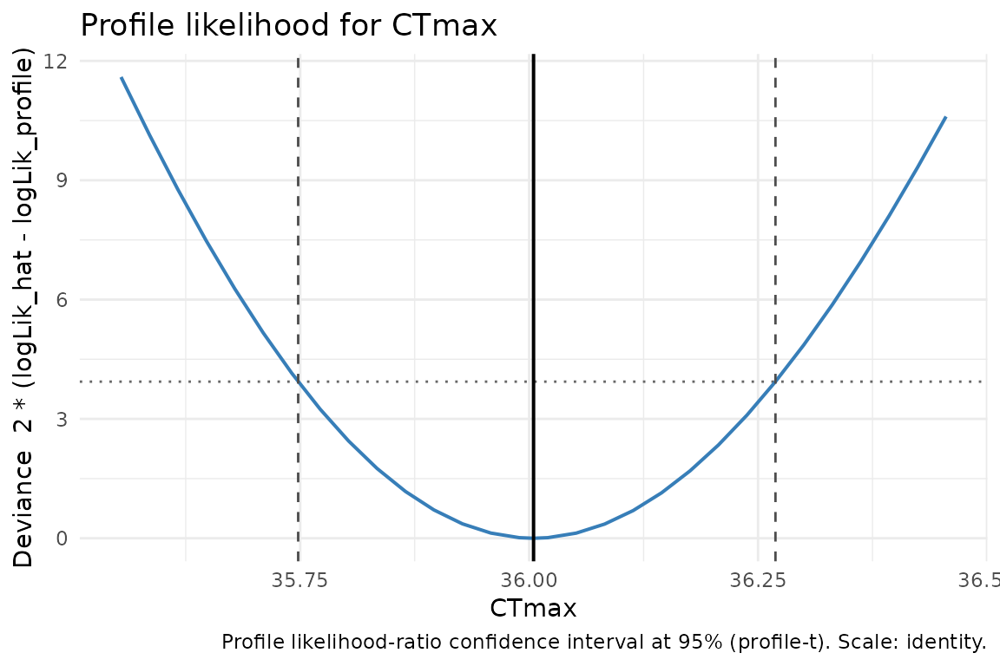
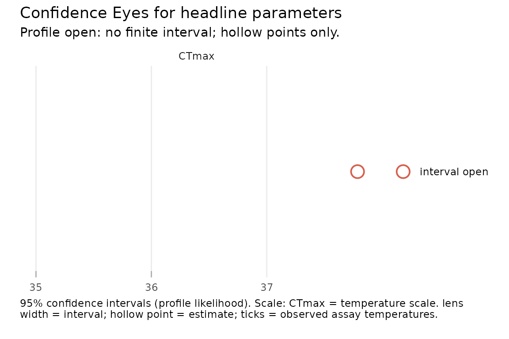

freqTLS reports profile-likelihood confidence
intervals as its default. This vignette explains what the
profile is, why its intervals can be asymmetric, how it differs from the
Wald interval, and — importantly — how freqTLS behaves
honestly when a profile does not close. These are likelihood intervals,
not posteriors; the language throughout is “confidence”, never
“posterior” or “credible”. See vignette("model-math") for
the 4PL parameterisation that the profile follows. Before interpreting
an interval, run check_tls(fit); its help page maps each
data-adequacy warning to a concrete design or analysis response.
What the profile does
For a scalar target
(say CTmax):
- Fit the maximum-likelihood estimate, obtaining .
- Fix the internal coordinate that maps to at a candidate value and re-optimise all the other coordinates, giving the profile log-likelihood .
- Form the deviance .
- The confidence interval is the set , found by root-finding on each side of the MLE.
At the MLE the deviance is (numerically) zero. The cutoff is the
squared
Student-
quantile
on
residual degrees of freedom (data rows minus free fixed-effect
coordinates), not the
quantile: this is the Bates–Watts
profile-
calibration, which is less optimistic at small
and converges to
as
(see vignette("frequentist-and-bayesian")).
profile() returns the whole deviance curve plus the
interval:
set.seed(1)
dat <- simulate_tls(family = "beta_binomial", CTmax = 36, z = 4, phi = 50, seed = 1)
fit <- fit_tls(dat, y = survived, n = total, time = duration, temp = temp,
family = "beta_binomial", tref = 1)
pc <- profile(fit, "CTmax")
c(estimate = pc$estimate, conf.low = pc$conf.low, conf.high = pc$conf.high,
cutoff = pc$cutoff, min_deviance = min(pc$deviance))
#> estimate conf.low conf.high cutoff min_deviance
#> 36.004832 35.747797 36.268991 3.937117 0.000000The deviance minimum sits essentially at zero, at the estimate. Plotting the profile shows the deviance curve, the profile- cutoff line, and the interval where the curve dips below it:
plot(pc)
Asymmetry and equivariance
A profile interval need not be symmetric about the estimate, and
freqTLS preserves the asymmetry rather than forcing a
symmetric
band. For a parameter on a log scale, such as z, the
profile is taken on the internal log_z coordinate and the
endpoints are exponentiated. This makes the interval
equivariant: the z interval is exactly
of the internal log_z interval.
ci_z <- confint(fit, "z", method = "profile")
ci_log_z <- confint(fit, "log_z", method = "profile")
# z endpoints equal exp() of the log_z endpoints
rbind(
z = c(ci_z$conf.low, ci_z$conf.high),
exp_log_z = exp(c(ci_log_z$conf.low, ci_log_z$conf.high))
)
#> [,1] [,2]
#> z 3.428293 4.381551
#> exp_log_z 3.428293 4.381551
# the interval is asymmetric about the estimate (in general)
with(ci_z, c(lower_gap = estimate - conf.low, upper_gap = conf.high - estimate))
#> lower_gap upper_gap
#> 0.4730210 0.4802363Profile versus Wald
The Wald interval is computed on the internal (link) scale and back-transformed. It is fast and first-order, but symmetric on the link scale and blind to the curvature of the likelihood. The profile interval inverts the likelihood-ratio test directly. On well-identified data the two agree closely; they diverge when the likelihood is skewed or the estimate approaches a boundary.
rbind(
profile = unlist(confint(fit, "CTmax", method = "profile")[c("conf.low", "conf.high")]),
wald = unlist(confint(fit, "CTmax", method = "wald")[c("conf.low", "conf.high")])
)
#> conf.low conf.high
#> profile 35.7478 36.26899
#> wald 35.7483 36.26136tidy_parameters() switches between the two for the whole
parameter table:
tidy_parameters(fit, method = "profile")[, c("parameter", "estimate", "conf.low", "conf.high", "interval_type")]
#> "up" is profiled with the delta-method Wald interval.
#> ℹ The profile path is not yet wired for the disjoint-bounds "up" coordinate
#> `beta_up`; use the reported Wald interval or request a bootstrap interval.
#> # A tibble: 6 × 5
#> parameter estimate conf.low conf.high interval_type
#> <chr> <dbl> <dbl> <dbl> <chr>
#> 1 low 0.0328 0.0329 0.104 profile
#> 2 up 0.976 0.957 0.995 wald
#> 3 k 5.41 4.21 7.05 profile
#> 4 CTmax 36.0 35.7 36.3 profile
#> 5 z 3.90 3.43 4.38 profile
#> 6 phi 26.7 13.0 71.0 profileThe upper asymptote up
Under the disjoint-bounds parameterisation up has its
own coordinate beta_up, but freqTLS does not
yet profile it (the profile path is wired for low but not
up). freqTLS reports up with the
delta-method Wald interval and labels it honestly —
confint(fit, "up", method = "profile") returns
interval_type = "wald" and emits an informational message
rather than silently substituting a different quantity. If you need a
prior-free, asymmetry-respecting interval for up, request
the bootstrap:
confint(fit, "up", method = "bootstrap").
Recovery when a profile does not close
The headline value-add over the Bayesian path is that
freqTLS tells you when the data do not identify a
parameter, instead of letting a prior quietly fill the gap. When a
profile does not rise above the cutoff on one side — because the data
are too sparse to pin the parameter down — the default
fallback = TRUE first attempts a parametric bootstrap. A
successful bootstrap returns a prior-free percentile interval and labels
its method as "bootstrap"; too few stable or
non-degenerate refits still leave an unavailable interval. Set
fallback = FALSE when you specifically need to inspect the
unmodified profile geometry. In that strict mode
freqTLS:
- emits a warning that the parameter is weakly
identified (“consider
bayesTLSor a bootstrap”), - returns
NAon the open side (never a fabricated bound), and - sets a
conf.statusmarker (open_lower,open_upper, oropen_both).
Here is a deliberately sparse design — few temperatures and little
mortality contrast — that does not identify CTmax. We fit
it live, then show the user-facing bootstrap recovery recipe separately.
A 1,000-refit bootstrap is intentionally not executed during package
checks; run that displayed chunk interactively when you need the
fallback interval.
set.seed(7)
sparse <- simulate_tls(
temps = c(35, 36), # only two temperatures
times = c(1, 2), # only two durations
reps = 2, n = 8,
CTmax = 36, z = 4,
family = "binomial", seed = 7
)
sparse_fit <- suppressWarnings(
fit_tls(sparse, y = survived, n = total, time = duration, temp = temp,
family = "binomial", tref = 1)
)
ci_default <- tryCatch(
withCallingHandlers(
confint(sparse_fit, "CTmax", method = "profile",
fallback = TRUE, nboot = 1000, boot_seed = 7),
warning = function(w) {
message("caught warning: ", conditionMessage(w))
invokeRestart("muffleWarning")
}
),
error = function(e) e
)
ci_default[, c("parameter", "conf.low", "conf.high", "estimate", "method",
"conf.status")]Now disable fallback to inspect the strict profile. The open side
remains NA, with an open_* status, rather than
becoming a confident but unsupported bound.
ci_strict <- tryCatch(
withCallingHandlers(
confint(sparse_fit, "CTmax", method = "profile", fallback = FALSE),
warning = function(w) {
message("caught warning: ", conditionMessage(w))
invokeRestart("muffleWarning")
}
),
error = function(e) e
)
#> caught warning: Inner re-optimisation did not converge at 1 grid point while profiling "CTmax".
#> ℹ Those points are reported as "NA"; the interval is taken from the points that
#> did converge.
#> caught warning: The profile deviance for "CTmax" is non-monotone (multiple local minima).
#> ℹ The interval may not be a single connected region; inspect `plot(profile(fit,
#> "CTmax"))`.
#> caught warning: The profile likelihood for "CTmax" did not close on the lower and upper sides:
#> "CTmax" is weakly identified.
#> ℹ Returning "NA" on the open side rather than a fabricated bound.
#> ℹ Consider bayesTLS or a bootstrap for this parameter.
ci_strict[, c("parameter", "conf.low", "conf.high", "estimate", "method",
"conf.status")]
#> # A tibble: 1 × 6
#> parameter conf.low conf.high estimate method conf.status
#> <chr> <dbl> <dbl> <dbl> <chr> <chr>
#> 1 CTmax NA NA 37.8 profile open_bothThe Confidence Eye follows the same contract. With its default
fallback = TRUE, a successful bootstrap recovery draws a
bootstrap lens. For the strict diagnostic below,
fallback = FALSE preserves the open profile and draws a
hollow point with no lens.
# fallback = FALSE so the eye refuses to draw a lens when the profile does not
# close (a hollow point only), matching the honest non-closing contract above.
suppressWarnings(plot_confidence_eye(sparse_fit, parm = "CTmax", method = "profile",
fallback = FALSE))
Calibration: how well do the intervals cover?
A confidence interval is only as good as its coverage. The
repository-only coverage study simulates 200 datasets at a known
CTmax/z under each family, fits every one by
ML, builds 95% profile intervals, and records the empirical
(frequentist) coverage. Its summary is shipped with the package:
cov_path <- system.file("extdata", "coverage_results.rds", package = "freqTLS")
if (nzchar(cov_path)) {
cov <- readRDS(cov_path)
knitr::kable(
cov$coverage, digits = 3,
caption = sprintf("Empirical coverage of 95%% profile CIs (nsim = %d; nominal 0.95).",
cov$meta$nsim)
)
}| family | n_converged | CTmax_coverage | CTmax_median_width | z_coverage | z_median_width | open_profiles |
|---|---|---|---|---|---|---|
| binomial | 200 | 0.945 | 0.406 | 0.970 | 0.736 | 0.000 |
| beta_binomial | 200 | 0.840 | 0.473 | 0.865 | 0.854 | 0.065 |
For the binomial model the profile intervals are
well calibrated — CTmax coverage sits at the nominal 0.95
and every profile closed. For the beta-binomial model
the intervals under-cover (CTmax ≈ 0.84,
z ≈ 0.87) at this sample size: estimating the extra
overdispersion parameter makes the likelihood-ratio interval optimistic,
and a small fraction of profiles do not close. The honest reading is to
treat beta-binomial profile intervals as approximate and, when coverage
matters, calibrate them with a parametric bootstrap or use
bayesTLS. This is exactly the regime the ship stance below
warns about. Repository maintainers can reproduce the study from a
source checkout with the repository-only
data-raw/coverage-study.R script; that script is not
installed with the package.
Ship stance
The profile gives fast, prior-free, asymmetry-respecting confidence
intervals when the MLE is interior and the data identify the
target. For boundary asymptotes, very sparse designs,
overdispersion concentrated at zero, or weak variance components, use
the interval route appropriate to the fitted model. Fixed-effect
coordinates in a random-intercept fit can be profiled under the Laplace
approximation; variance components use log-scale Wald intervals unless
you request the random-effects-aware parametric bootstrap.
freqTLS warns you when the requested route is weak or
unavailable. It never claims the profile is universally superior to the
Bayesian path. See vignette("comparing-to-bayesTLS") for
the side-by-side comparison.